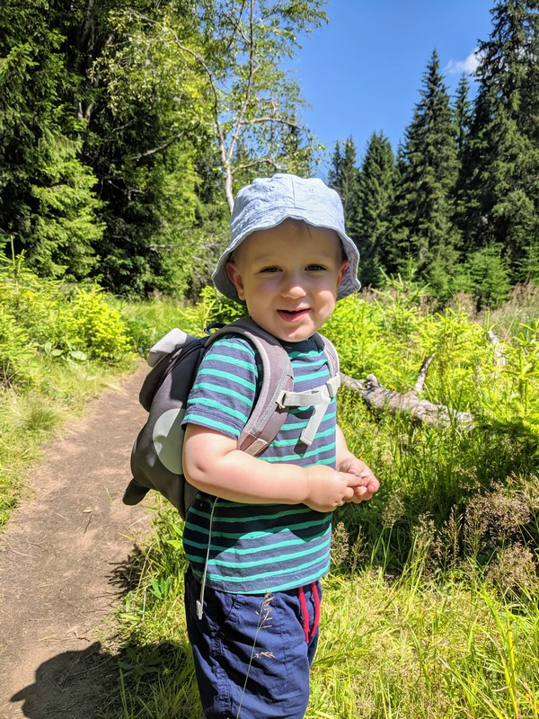
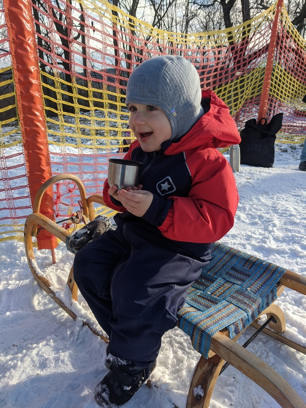

S dětmi opravdu život letí jako blázen. Nemůžu uvěřit, že od posledního updatu o Oliho rozvoji už uplynul zase téměř rok! A co všechno se za tu dobu opět změnilo…
- Oli v necelých třech letech nosí velikost 98/104 a váží zhruba 14,5 kila.
- Nebýt covidu, asi bychom už kočár definitivně zazimovali, nicméně tím, jak jsem přestala jezdit městskou a občas s ním přecejen potřebuju jít delší trasu nebo vezu nějaký větší náklad, ještě kočár celkem užijeme. Na výlety ani k prarodičům už ho ale delší dobu nevozíme a O. bez problémů ujde třeba i 5 kilometrovou procházku.
- Klepu na dřevo, ale odpolední spánek (cca od 1 do 3) u nás pořád ještě funguje a jsem za to neskonale vděčná. Bohužel je to ale zase na úkor spánku nočního, který teď trvá cca jen od 9 do 6 a já tak musím chodit brzo do postele, pokud chci mít svých 8 hodin spánku denně (jakože CHCI :-D!). Noci bývají povětšinou klidné, ač jsme teď na podzim měli období, kdy se O. v noci víc budíval (možná špatné sny?), ale zase to pominulo.
- S jídlem se O. trochu zkazil - respektive zkazili mi ho prarodiče 8-) Je teď víc mlsnej, loudívá na mě šťávičky (Hipp džusíky, co mu dávaj naši), Hipp tyčinky, Kinder čokoládu, zavařeniny… Někdy vyměknu, ale většinu času se snažím napravovat režim povolený během pobytu u prarodičů. Na snídani nejčastěji připravuju různé varianty ovesné kaše, jogurt s ovocem, případně mu zaleju Emco nebo MixIt cereálie s mlíkem, pokud mám línější ráno 8-) Jako hlavní jídlo dne točíme přes týden naše oblíbené stálice - jednou týdně rybu (většinou lososa), jednou týdně luštěniny (většinou červenou čočku), občas těstoviny, rizota a pak různé zeleninové zapékané variace. Naštěstí je O. pořád polívkový a začíná být i poměrně masový, tak tomu víc přizpůsobuju náš jinak spíše vege jídelníček. Z ovoce má rád téměř vše, ze zeleniny hlavně rajčata a okurky - naopak odmítá třeba papriku, kterou dřív normálně jedl. A kupodivu není vůbec pečivovej po mě - maximálně vezme na milost chleba s máslem na večeři (cokoliv mu na něj položím, ať je to sýr či šunka, obvykle sundá a nejí) nebo knackebroty k míchaným vajíčkům. Každopádně co tak slýchávám o jiných dětech nejedlících, nemáme si ještě vůbec na co stěžovat a obecně je to s O. na jídlo většinou celkem pohoda a nad ničím se moc neofrňuje.
- V jídle už je víceméně samoobslužný - nají se lžičkou a už se celkem naučil i napichování vidličkou. Občas už si dokonce i způsobně utře pusu do ubrousku místo do rukávu čistýho trička 8-)
- Co se týče odplenkování, výraznější úspěchy v této oblasti zaznamenáváme někdy od podzimu, kdy jsem mu před den začala dávat slipy i za cenu častých nehod a můžu říct, že to celkem dost pomohlo - začal si sám říkat, že se mu chce, ač na spaní se ještě bez pleny rozhodně neobejdeme. Teď po Vánocích přišel zase jakýsi regres a nehod přes den je opět víc, ale snažím se z toho nedělat vědu a vyčkávám na jaro/léto, kdy to bude všecko zase krapet jednodušší a snad se těch plen konečně definitivně zbavíme.

- Rádi spolu malujeme, tvoříme a lepíme. Stále ho moc baví samolepkový časopis Kutílek, který mu děda na můj popud předplatil k druhým narozeninám a jsem nadšená z toho, jak spoustu úloh, jako spojování puntíků, které ještě před rokem vůbec nepobíral, už začíná hezky zvládat.
- Oliho záliba ve vlacích od minula také nabrala nových rozměrů. Připadá mi fascinující, kolik různých typů mašin dokáže pojmenovat a hlavně je i naživo poznat! Hlášky, co slýchá na nádražích, už zná nazpaměť a používá je při svých hrách, což je neuvěřitelně komické :D (“Žádáme cestující, aby při pohybu v kolejišti dbali své osobní bezpečnosti a nevstupovali do kolejiště před zastavením vlaku :D…”) Do domácí sbírky nám přibylo kvarteto Českých drah, několik nových vláčků, igráček pan výpravčí i s plácačkou, depo od Ježíška a nadšení sklidilo také předplatné časopisu Můj vláček, který vydávají rovněž České dráhy. Za ten rok jsme taky zjistili, že lidi kolem drah jsou často moc milí k takhle nadšeným dětem - při pozorování na našich oblíbených místech na nás často strojvedoucí mávají a houkají a jeden pan strojvedoucí už dokonce vzal Oliho i do kabiny a projel se s ním po nádraží O:-)
- Často mě překvapí jeho fantazie a to, jak při hře cokoliv může být čímkoliv - např. dřevěné kostky na stavění představují různé jídlo, kolíčky na prádlo jsou mašinky apod. Doma vyznáváme hračkový minimalismus, ač si kvůli tomu občas připadám jak krkavčí máma, ale tohle mě jen utvrzuje v tom, jak málo hraček ve skutečnosti děti potřebují.
- V čem minimalismus nevyznávám jsou však samozřejmě dětské knihy, těch nám stále nenápadně přibývá O:-) Spíš než přes den jsme si teď navykli předčítat si je před odpoledním spánkem a večer na dobrou noc. Největší oblibě se aktuálně těší ty o krtečkovi, o mašinkách a bagrech z Levných knih a nejnovější Počítání z nakladatelství Baobab, kterou Oli našel pod stromečkem.
- Čísla ho teď opravdu zajímají. S občasnou chybkou dokáže napočítat do 10 a spočítat maximálně 10 předmětů. Začíná projevovat zájem také o písmena - pozná “O jako Oli” a občas se ptá, co je kde napsané.
- Rád si prozpěvuje a občas nám s Péťou nakazuje, ať mu do toho nezpíváme, že chce zpívat sám :D. Má rytmus i paměť na texty. Hned zbystří, když v rádiu hrají nějakou naši oblíbenou písničku (třeba u I want to break free hned hlásí, že “to je ta naša” a ví, že ji zpívá kapela Queen).
- Umí s přehledem anglicky všechny barvy, jejichž název zná i v češtině. Dokáže říct anglicky, jak se jmenuje a kde bydlí.

- Cizí lidé (ale i my doma) často žasnou nad vyzrálostí jeho verbálního projevu, nad tím, jak se vyjadřuje, často i v souvětích, jaké výrazy používá. Ještě víc mě těší, jak u něj už postupně pozoruju i rozvoj emoční inteligence - např. když jeho sestřenice pláče, konejšivým hlasem se ji snaží utěšit. Jednou mě úplně dojal, když jsem servírovala oběd a on slezl ze židličky a přišel mi zastrčit triko do kalhot, aby mi netáhlo na ledviny :D Miluju jeho dětské projevy lásky, pusinky a když mi říká “Já tě mám nejradši, maminko” <3
- Se vztekáním už bojujeme méně často, spoustu situací se učíme zvládat s větším klidem, ale myslím, že naučit se sladit naše temperamenty bude (pro nás oba) celoživotní škola trpělivosti. Každý den se snažím být vděčná za tu příležitost pracovat na sobě, ač je to někdy tak nesmírně těžké. Ale to obohacení, které do našeho života s Olim přišlo, prostě za ta občasná příkoří stojí :-)